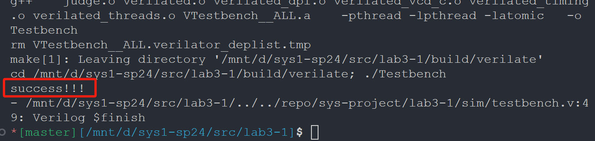
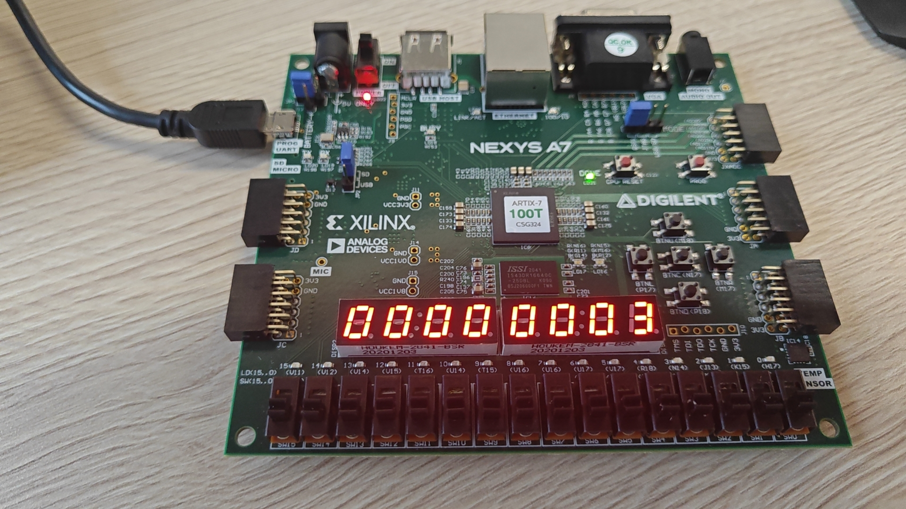

Lab3 report
lab 3-1¶
- 请在实验报告中详细描述每一步的过程并配有适当的截图和解释，对于仿真设计和上板验证的结果也应当有适当的解释和照片 Total: 15%
细分：
- 使用 enum 语法 FSM 设计 5%
如上，学习 enum 语法后，根据具有四个状态（即 0、1、2、3 个连续 a）枚举 S 0、S 1 等等，然后根据状态表填写 always 块即可，仿真结果通过  - 综合实现有限状态机 10% 结合下面两幅图我们可以得知，按下 FPGA 板的 N17 表示输入字符 a, P 18 表示输入字符 b 下板验证： 输入一个 a: 输入两个 a 后一个b 输入 3 个 a 后，任何操作都不改变状态：  2. 思考比较
enum + case的编程范式和数组查表的编程范式之间的优劣 5%
{kind=link}
{kind=link}
{kind=link}
{kind=link}
{kind=link}
{kind=link}
{kind=link}
相比之下，enum + case 的编程范式更加具有以下优点：
- 可读性：使用
enum定义的状态机代码结构清晰，易于理解和提高可维护性 - 灵活性：可以通过简单的修改
case语句来改变状态转换逻辑 - 适应性：适用于状态转换逻辑复杂，状态数目不是很多的情况。
而查表法的优点体现在
- 性能：查表法通常能够提供最快的状态转换，因为它直接通过索引访问预定义的状态。
- 资源利用：对于大型状态机，查表法可以更有效地利用查找表（LUTs
） ，减少逻辑电路的使用
当然，正如实验指导中所说，除非有自动化脚本生成 table.hex，否则优先考虑enum + case 的编程范式 ( 不建议手写，因为很容易写错 )
（各自的劣势主要就是对方的优点）
- 绘制一个有限状态机的状态图和状态转移表，如果输入的 01 字符串中 1 的个数大于 3 个，则 FSM 输出 1 表示接受，反之输出 0 表示拒绝。10%
一共有四种状态，用 S N 表示输入了 N 个 1 （没注意 hint，如果改成 hint 应该是分别对应 S 0、S 1 组成的二进制数的值） 下表使用 c_state 表示 current state，二三栏表示输入的 X 为对应值时的 next state
| c_state | input ‘0’ | input ‘1’ | output |
|---|---|---|---|
| S0 | S0 | S1 | 0 |
| S1 | S1 | S2 | 0 |
| S2 | S2 | S3 | 0 |
| S3 | S3 | S3 | 1 |
最后 assign Y = (c_state == S 3); 或者说 assign Y = output;
{kind=link}
（不好意思，写完了才看到 hint……我这样计数应该也可以吧）
hint: 输入为信号 X，内部状态为 S1、S0，输出为 Y
- 观察以下有限状态机电路实现存在的不足和不足的原因，如果电路不稳定可能会发生什么问题（bonus，分数不溢出 report
） ：+10%
代码使用了异步复位（~rstn
lab 3-2¶
- 请在实验报告中详细描述每一步的过程并配有适当的截图和解释，对于仿真设计和上板验证的结果也应当有适当的解释和照片 Total: 20%
细分：
- 仿真通过，输出
success!!!10%
make verilate- 综合实现计数器 10%
放不了视频，放下板的 23 时进位的照片吧
{kind=link}
{kind=link}
- 简述如何使用 Cnt2num 实现 1234 的 BCD 码计数器，并思考 Cnt2num 预留 co、low_co、high_rst 引脚的意义 10%
我们使用两个 Cnt 分别代表了 Cnt 2 num 的高低两位，同理可以用两个 Cnt 2 num （记作 c2 high，c 2 low）分别代表 Cnt 4 num 的高两位、低两位，当合起来是 1233 时进位并下一步归零；
- co 可以作为 c 2 low 的进位输给 c 2 high
- c 2 high 的 low_co 则可以接收 c2 low 的 co
- high_rst 则使得能够在 cnt 达到特定数值后最高位进位并所有计数器归零
lab 3-3¶
- 请在实验报告中详细描述每一步的过程并配有适当的截图和解释，对于仿真设计和上板验证的结果也应当有适当的解释和照片 Total: 20%
细分：
- 仿真通过，输出
success!!!10%
make verilate- 综合实现乘法器 10%
按照实验指导，我做了如下工作
{kind=link}
- 解释仿真测试样例和下板的顶层结构为什么满足 start-finish 握手协议。尝试给出 start-finish 握手协议存在的缺点和改进的方法。 10%
我是先较为随意地设置了两次 start 之间的间隔时间，观察 finish 在 start 之后多久变为 1 后，选择一个比较合适的间隔时间一满足
{kind=link}
可以看到 finish 在 start 出现后 300 多 ns 后出现，故将两个 start 间隔设置为 400 ns，如下
{kind=link}
- 请仿照乘法器的设计方法和我们手动计算除法的方式，设计 32bit 无符号整数除法器，你只需要给出设计思路即可。流程图和伪代码是推荐的描述形式。 10%
module Divider_32(
input clk,
input rst,
input start,
input [31:0] dividend,
input [31:0] divisor,
output finish,
output [31:0] quotient,
output [31:0] remainder
);
endmodule
下面是伪代码（我们暂且忽略 clk 等
我的思路是取 64 位（对应 32 位相乘可得 64 位
reg [63:0] temp; // 临时被除数，扩展到64位以避免溢出
reg [31:0] quotient; // 商
reg [31:0] remainder; // 余数
integer i;
always @(dividend or divisor) begin
remainder = 32'b0; // 初始化余数为0
temp = {remainder, dividend}; // 初始化临时被除数
quotient = 32'b0; // 初始化商为0
// 主循环
for (i=31; i >= 0; i = i-1) begin // 迭代32次
remainder = temp[63:32] - divisor;
if (remainder >= 0) begin
quotient[i] = 1'b1;
temp = {remainder, temp[31:0]};
end else begin
// 啥也不干
end
temp = temp << 1; // 左移被除数
end
// 计算余数
remainder = temp[63:32];
end
- (bonus) 尝试改进目前的有限状态机，使得一次乘法操作或者连续乘法操作消耗的时钟周期数可以减少。 +15%
- 我们所采用的应该是 Booth Multiplier(Radix-2) Algorithm，对应自然还存在 Booth Multiplier(Radix-4) Algorithm 等等，也就是将 product_reg 一次向左移两位，这样可以使得时钟周期数减半；当然其中的难点还是不少的。
- 例如，我们使用 Radix-4 自然要面对乘以 0、1、2、3 的可能。0、1、2 都比较简单，对应操作：不处理、加乘数、加左移一位后的乘数；但是乘 3 比较困难，一个解决方法是
- "To avoid multiplying by 3, we use Booth’s observation and recode the digit set to be 2, 1, 0, ‐1, and ‐2."
但是我没有很明白这个意思，所以也只是作为了解，无法再加讲解；下面是我自己的猜想：
- 正如上面所说，乘以 2 的次方数（如 1、2、4、8）都是比较容易的，我们可以将被乘数根据乘数移位后相加，一个简单的例子如下
： （缺点是移位器使用较多……）